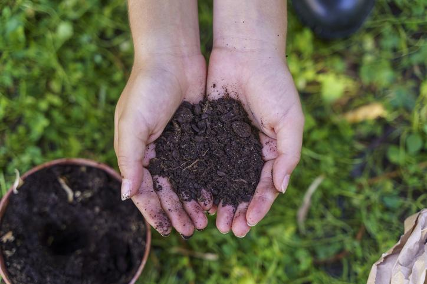
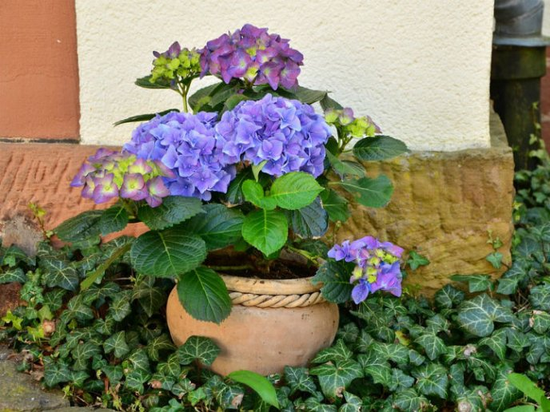
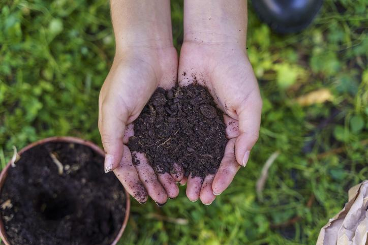
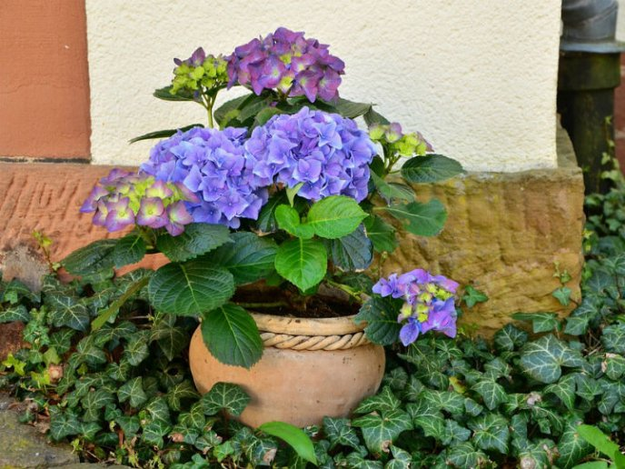

¿Quienes somos?
Nuestro proyecto esta hecho con la finalidad de tener y mojara calidad de vida del mundo empezando por tener zonas más verdes para poder ayudar al planeta con el calentamiento global. La botánica es diversa y cuenta muchas especialidades, estudia la vida vegetal y su relación con los suelos, la atmósfera, y otros seres vivos. La Botánica se centra en el estudio de las plantas, su ciclo de crecimiento, estructura, función, clasificación, distribución y reproducción.
¿Que hacemos?
1 Macetas
Proporcionamos facilidad para crear tus masetas o manualidades con materia reciclado Los espacios verdes pueden reducir la temperatura ambiente de las ciudades hasta 1ºC, disminuyendo la isla de calor urbana y, por lo tanto, el nocivo smog de las ciudades. En este sentido, tener ambientes urbanos 1º C más frescos implica evitar la formación del nocivo Ozono que se dispara en episodios de calor intenso.
2 Areas verdes
Ayudamos a crear areas verdes Los espacios verdes pueden reducir la temperatura ambiente de las ciudades hasta 1ºC, disminuyendo la isla de calor urbana y, por lo tanto, el nocivo smog de las ciudades. En este sentido, tener ambientes urbanos 1º C más frescos implica evitar la formación del nocivo Ozono que se dispara en episodios de calor intenso.
3 Cursos
Aprende a preservar y prensar plantas para crear composiciones únicas de arte botánico. Aprende de los mejores profesionales del sector y únete a la comunidad creativa Domestika. Certificados gratis. Cursos 100% Online. Empieza a crear. La Comunidad Creativa.
Productos
 



: Semillas de todo tipo plantas
Tenemos de todo tipo de semillas para cualquier sitio o espacio en que lo necesites siendo estas de la mejor calidad
officiis nulla rerum vitae vero accusamus tempore voluptate.: Vitaminas
Vitamina C: Ayuda a proteger las plantas contra el estrés hídrico o el estrés causado por el ozono y la radiación UV.
B1: Es un antioxidante que ayuda a proteger a las plantas de diferentes factores estresantes ambientales como la salinidad (Sayed y Gadallah 2002).
: Abono
Contamos con el mejor abono compost orgánico, aunque también son comunes el estiércol, la turb, el humus o los extractos de algas, que cuentan con una gran cantidad de nutrientes y son perfectos para combatir plagas, problemas de aclimatación o sequía.
: Plantas
Tenemos todo tipo de plantas El resto de plantas de interior más vendidas son el Kalanchoe, el Anthurium, el Crisantemo de maceta, las Saintpaulias, el Photos, las Orquídeas, las Drácenas, la Bilbergia, las Arecas, las Sansivieras, el Ficus benjamina, la Kentia, el Helecho, el Syngonium y las Yuccas como planta de interior.